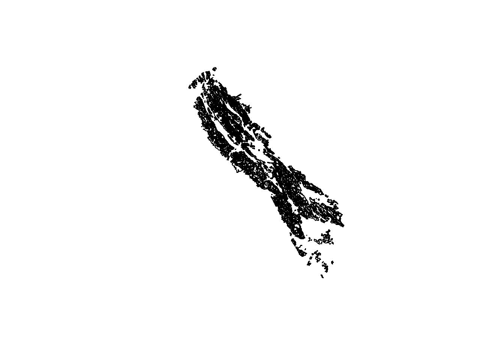

Last updated: 2020-08-03
Checks: 6 1
Knit directory: workflow/
This reproducible R Markdown analysis was created with workflowr (version 1.6.1). The Checks tab describes the reproducibility checks that were applied when the results were created. The Past versions tab lists the development history.
The R Markdown file has unstaged changes. To know which version of the R Markdown file created these results, you’ll want to first commit it to the Git repo. If you’re still working on the analysis, you can ignore this warning. When you’re finished, you can run wflow_publish to commit the R Markdown file and build the HTML.
Great job! The global environment was empty. Objects defined in the global environment can affect the analysis in your R Markdown file in unknown ways. For reproduciblity it’s best to always run the code in an empty environment.
The command set.seed(20200429) was run prior to running the code in the R Markdown file. Setting a seed ensures that any results that rely on randomness, e.g. subsampling or permutations, are reproducible.
Great job! Recording the operating system, R version, and package versions is critical for reproducibility.
Nice! There were no cached chunks for this analysis, so you can be confident that you successfully produced the results during this run.
Great job! Using relative paths to the files within your workflowr project makes it easier to run your code on other machines.
Great! You are using Git for version control. Tracking code development and connecting the code version to the results is critical for reproducibility.
The results in this page were generated with repository version a4dc7f8. See the Past versions tab to see a history of the changes made to the R Markdown and HTML files.
Note that you need to be careful to ensure that all relevant files for the analysis have been committed to Git prior to generating the results (you can use wflow_publish or wflow_git_commit). workflowr only checks the R Markdown file, but you know if there are other scripts or data files that it depends on. Below is the status of the Git repository when the results were generated:
Ignored files:
Ignored: .Rhistory
Ignored: .Rproj.user/
Ignored: DSM/depth_ffs.Rda
Ignored: Ecosites/.Rhistory
Ignored: Ecosites/CA630_ES_dominant_condition.dbf
Ignored: Ecosites/CA630_ES_dominant_condition.prj
Ignored: Ecosites/CA630_ES_dominant_condition.shp
Ignored: Ecosites/CA630_ES_dominant_condition.shx
Ignored: Ecosites/dominant_ecosite_XI.dbf
Ignored: Ecosites/dominant_ecosite_XI.prj
Ignored: Ecosites/dominant_ecosite_XI.shp
Ignored: Ecosites/dominant_ecosite_XI.shx
Ignored: Ecosites/ecoclass_continuousRaster.Rda
Ignored: Ecosites/ecoclass_continuous_rf.Rda
Ignored: Ecosites/ecosite_training_data.Rda
Ignored: Scripts/mucomp/.Rhistory
Ignored: Scripts/mucomp/.Rproj.user/
Ignored: data/
Ignored: workflow/.Rhistory
Ignored: workflow/.Rproj.user/
Ignored: workflow/data/project_mapunits_ssurgo.dbf
Ignored: workflow/data/project_mapunits_ssurgo.prj
Ignored: workflow/data/project_mapunits_ssurgo.shp
Ignored: workflow/data/project_mapunits_ssurgo.shx
Untracked files:
Untracked: .gitignore
Untracked: DSM/ffs_prediction_depth_cm.tif
Untracked: DSM/ffs_prediction_depth_cm.tif.ovr
Untracked: DSM/prediction_musuite.tif
Untracked: DSM/predictions/
Untracked: DSM/predictor_stack_800m.tif
Untracked: DSM/slope_q80_queen_project.tif
Untracked: DSM/slope_q80_queen_project.tif.aux.xml
Untracked: DSM/slope_q80_queen_project.tif.ovr
Untracked: DSM/slope_queen_project.tif
Untracked: DSM/slope_queen_project.tif.aux.xml
Untracked: DSM/slope_queen_project.tif.ovr
Untracked: DSM/slope_rook_project.tif
Untracked: DSM/slope_rook_project.tif.ovr
Untracked: Geodata/
Untracked: History/
Untracked: Literature/
Untracked: Maps/
Untracked: Points/
Untracked: Premap/
Untracked: Projects/2020-2SON-MLRA-004.html
Untracked: Projects/MVO_West/
Untracked: Projects/progress_update_april2020.pptx
Untracked: Projects/project_mapunits.csv
Untracked: Projects/project_mapunits_b.zip
Untracked: workflow/output/
Unstaged changes:
Modified: workflow/analysis/00-get_project.Rmd
Modified: workflow/analysis/01-project_extent.Rmd
Modified: workflow/analysis/02-project_linework.Rmd
Modified: workflow/analysis/05-project_pedons.Rmd
Note that any generated files, e.g. HTML, png, CSS, etc., are not included in this status report because it is ok for generated content to have uncommitted changes.
These are the previous versions of the repository in which changes were made to the R Markdown (workflow/analysis/02-project_linework.Rmd) and HTML (workflow/docs/02-project_linework.html) files. If you’ve configured a remote Git repository (see ?wflow_git_remote), click on the hyperlinks in the table below to view the files as they were in that past version.
| File | Version | Author | Date | Message |
|---|---|---|---|---|
| Rmd | a4dc7f8 | Andrew G. Brown | 2020-08-03 | organizing and update |
| html | a4dc7f8 | Andrew G. Brown | 2020-08-03 | organizing and update |
Reading layer `ca649_a' from data source `E:\CA649\Geodata\Offical_Geodatabase\FGCA649_Projects_2020_0323_agb.gdb' using driver `OpenFileGDB'
Simple feature collection with 2968 features and 9 fields
geometry type: MULTIPOLYGON
dimension: XY
bbox: xmin: 729705.4 ymin: 4119247 xmax: 789904 ymax: 4187345
epsg (SRID): 26910
proj4string: +proj=utm +zone=10 +ellps=GRS80 +towgs84=0,0,0,0,0,0,0 +units=m +no_defsReading layer `project_mapunits_ssurgo' from data source `E:\CA649\workflow\data' using driver `ESRI Shapefile'
Simple feature collection with 2513 features and 5 fields
geometry type: POLYGON
dimension: XY
bbox: xmin: 157608.9 ymin: 4119654 xmax: 243235.7 ymax: 4246709
epsg (SRID): 32611
proj4string: +proj=utm +zone=11 +datum=WGS84 +units=m +no_defs
Updating layer `working_progress' to data source `output/working_progress.shp' using driver `ESRI Shapefile'
Writing 2374 features with 24 fields and geometry type Polygon.Calculate the area of project mapunits replaced by each MLRA mapunit concept.
Reading layer `ca649_a' from data source `E:\CA649\Geodata\Offical_Geodatabase\FGCA649_Projects_2019_1125_ra.gdb' using driver `OpenFileGDB'
Simple feature collection with 3347 features and 9 fields
geometry type: MULTIPOLYGON
dimension: XY
bbox: xmin: 729705.4 ymin: 4119247 xmax: 789904 ymax: 4187345
epsg (SRID): 26910
proj4string: +proj=utm +zone=10 +ellps=GRS80 +towgs84=0,0,0,0,0,0,0 +units=m +no_defsReading layer `ca649_b' from data source `E:\CA649\Geodata\Offical_Geodatabase\FGCA649_Projects_2019_1125_ra.gdb' using driver `OpenFileGDB'
Simple feature collection with 1 feature and 3 fields
geometry type: MULTIPOLYGON
dimension: XY
bbox: xmin: 729705.4 ymin: 4119247 xmax: 789904 ymax: 4187345
epsg (SRID): 26910
proj4string: +proj=utm +zone=10 +ellps=GRS80 +towgs84=0,0,0,0,0,0,0 +units=m +no_defs| MUSYM | acreage | |
|---|---|---|
| 21 | AnG2 | 1.655064e+04 [acre] |
| 20 | AnE | 1.500500e+04 [acre] |
| 19 | AmG3 | 5.691609e+03 [acre] |
| 63 | TbF2 | 4.920454e+03 [acre] |
| 25 | BeF | 4.431101e+03 [acre] |
| 16 | AhD | 3.782698e+03 [acre] |
| 34 | BrF2 | 3.540397e+03 [acre] |
| 22 | BdD | 3.305413e+03 [acre] |
| 56 | RcG | 3.124155e+03 [acre] |
| 23 | BdE | 2.617259e+03 [acre] |
| 18 | AkF2 | 2.064020e+03 [acre] |
| 9 | 7088 | 2.037421e+03 [acre] |
| 29 | BkE2 | 1.906455e+03 [acre] |
| 17 | AhE2 | 1.703972e+03 [acre] |
| 61 | TaD2 | 1.556766e+03 [acre] |
| 6 | 7085 | 1.467520e+03 [acre] |
| 2 | 7076 | 1.412324e+03 [acre] |
| 47 | LdC | 1.218651e+03 [acre] |
| 26 | BfG | 1.155054e+03 [acre] |
| 36 | BrG2 | 1.151211e+03 [acre] |
| 7 | 7086 | 7.692374e+02 [acre] |
| 4 | 7079 | 7.326209e+02 [acre] |
| 62 | TaE2 | 6.029781e+02 [acre] |
| 35 | BrF3 | 5.804819e+02 [acre] |
| 41 | DbG | 5.400120e+02 [acre] |
| 31 | BlF | 4.957036e+02 [acre] |
| 10 | 7089 | 4.013987e+02 [acre] |
| 24 | BeD | 3.705953e+02 [acre] |
| 37 | CaC | 3.534592e+02 [acre] |
| 28 | BgE | 2.763388e+02 [acre] |
| 65 | WaF | 2.579218e+02 [acre] |
| 5 | 7083 | 1.850245e+02 [acre] |
| 30 | BlD | 1.685606e+02 [acre] |
| 3 | 7078 | 1.606353e+02 [acre] |
| 38 | DaD | 1.605921e+02 [acre] |
| 33 | BoD | 1.349472e+02 [acre] |
| 27 | BgD | 1.199454e+02 [acre] |
| 60 | SbE | 1.034608e+02 [acre] |
| 40 | DbE | 8.743860e+01 [acre] |
| 39 | DaE | 6.187593e+01 [acre] |
| 13 | AdG | 5.915760e+01 [acre] |
| 8 | 7087 | 4.586728e+01 [acre] |
| 54 | RaD | 4.503899e+01 [acre] |
| 42 | HaG | 4.490405e+01 [acre] |
| 48 | MbG3 | 3.875694e+01 [acre] |
| 57 | SaD | 3.600987e+01 [acre] |
| 32 | BmG2 | 3.578706e+01 [acre] |
| 49 | MbH2 | 3.258969e+01 [acre] |
| 46 | LbE | 2.986535e+01 [acre] |
| 15 | AgG2 | 2.959522e+01 [acre] |
| 50 | McE | 2.555636e+01 [acre] |
| 53 | PaD | 1.642880e+01 [acre] |
| 43 | HbC | 7.455137e+00 [acre] |
| 58 | SaE | 6.150015e+00 [acre] |
| 45 | JcD2 | 6.091691e+00 [acre] |
| 52 | MdG2 | 4.593849e+00 [acre] |
| 1 | 7074 | 4.344921e+00 [acre] |
| 55 | Rb | 3.258664e+00 [acre] |
| 44 | HcF | 2.772172e+00 [acre] |
| 11 | AaD | 2.181914e+00 [acre] |
| 14 | AeD | 1.563066e+00 [acre] |
| 59 | SaF | 2.782252e-01 [acre] |
| 64 | W | 2.212083e-01 [acre] |
| 12 | AcE | 1.245523e-01 [acre] |
| 51 | MD | 8.608004e-02 [acre] |
85684.02 [acre]
sessionInfo()R version 3.6.3 (2020-02-29)
Platform: x86_64-w64-mingw32/x64 (64-bit)
Running under: Windows 10 x64 (build 17763)
Matrix products: default
locale:
[1] LC_COLLATE=English_United States.1252
[2] LC_CTYPE=English_United States.1252
[3] LC_MONETARY=English_United States.1252
[4] LC_NUMERIC=C
[5] LC_TIME=English_United States.1252
attached base packages:
[1] stats graphics grDevices utils datasets methods base
other attached packages:
[1] dplyr_1.0.0 sf_0.8-1 soilDB_2.5.6 aqp_1.22
loaded via a namespace (and not attached):
[1] Rcpp_1.0.4.6 highr_0.8 pillar_1.4.3 compiler_3.6.3
[5] later_1.0.0 git2r_0.26.1 plyr_1.8.6 workflowr_1.6.1
[9] class_7.3-15 tools_3.6.3 digest_0.6.25 tibble_3.0.3
[13] lifecycle_0.2.0 evaluate_0.14 lattice_0.20-38 pkgconfig_2.0.3
[17] rlang_0.4.7 DBI_1.1.0 curl_4.3 yaml_2.2.1
[21] xfun_0.12 e1071_1.7-3 stringr_1.4.0 cluster_2.1.0
[25] knitr_1.28 raster_3.1-5 xml2_1.3.2 generics_0.0.2
[29] vctrs_0.3.0 fs_1.3.1 tidyselect_1.1.0 classInt_0.4-2
[33] rprojroot_1.3-2 grid_3.6.3 reshape_0.8.8 glue_1.4.1
[37] data.table_1.12.8 R6_2.4.1 rmarkdown_2.3 sp_1.4-2
[41] purrr_0.3.4 reshape2_1.4.4 magrittr_1.5 whisker_0.4
[45] ellipsis_0.3.1 units_0.6-5 backports_1.1.5 promises_1.1.0
[49] codetools_0.2-16 htmltools_0.4.0 httpuv_1.5.2 KernSmooth_2.23-16
[53] stringi_1.4.6 crayon_1.3.4